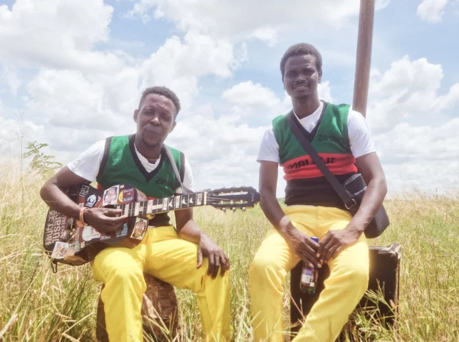

Malawi's vibrant duo blending traditional rhythms with modern folk melodies.
Madalitso Band is a two-piece acoustic group from Malawi known for their infectious energy and unique blend of traditional Malawian rhythms with folk-inspired melodies. They have gained international recognition for their raw, heartfelt performances and innovative use of homemade instruments.
Madalitso Band's music is a captivating fusion of traditional Malawian rhythms and folk, delivered with a raw, unpolished charm. Their use of homemade instruments and powerful live performances has earned them a growing reputation on the global music stage.
From humble buskers to globally touring superstars, it's the musical equivalent of the rags-to-riches story. The Southeast African Madalitso Band is well on its way. When the two musicians were discovered, they were still playing on the streets of Malawi's capital, Lilongwe. Now, they have four albums to their name, with only Asia and Australia left to conquer on their tour list. Yet the duo still sounds fresh and unpretentious, with their syncopated folk played on a one-string bass, a four-string guitar, and a foot drum. Music without airs, guaranteed to bring a big smile. Image by: Neil Nayar
Van simple buskers tot wereldwijd toerende supersterren, dat is het muzikale equivalent van het van-krantenjongen-tot-miljonair-verhaal. De Zuidoost-Afrikaanse Madalitso Band is goed op weg. Speelden de twee muzikanten op het moment van ontdekking nog op straat in de Malawische hoofdstad Lilongwe, inmiddels hebben ze vier albums uit en ontbreken alleen Azië en Australië nog op hun tourlijst. Toch klinkt het duo nog altijd fris en eenvoudig, met hun op eensnarige bas, viersnarige gitaar en voettrommel gespeelde, gesyncopeerde folk. Muziek zonder kapsones, goed voor een grote grijns. Beeld door: Neil Nayar
Saturday, July 04
17:15 - 18:00
Bossa Nova
2
♂️ Male
Yes